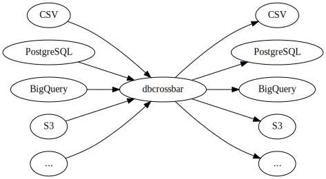
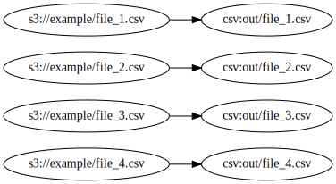
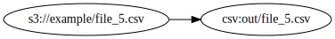

How it works
dbcrossbar uses pluggable input and output drivers, allowing any input to be copied to any output:

Parallel data streams
Internally, dbcrossbar uses parallel data streams. If we copy s3://example/ to csv:out/ using --max-streams=4, this will run up to 4 copies in parallel:

As soon as one stream finishes, a new one will be started:

dbcrossbar accomplishes this using a stream of CSV streams. This allows us to make extensive use of backpressure to control how data flows through the system, eliminating the need for temporary files. This makes it easier to work with 100GB+ CSV files and 1TB+ datasets.
Shortcuts
When copying between certain drivers, dbcrossbar supports "shortcuts." For example, it can load data directly from Google Cloud Storage into BigQuery.
Multi-threaded, asynchronous Rust
dbcrossbar is written using asynchronous Rust, and it makes heavy use of a multi-threaded worker pool. Internally, it works something like a set of classic Unix pipelines running in parallel. Thanks to Rust, it bas been possible to get native performance and multithreading without spending too much time debugging.